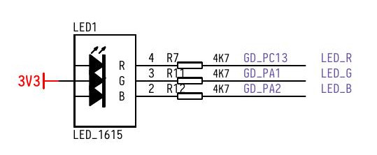
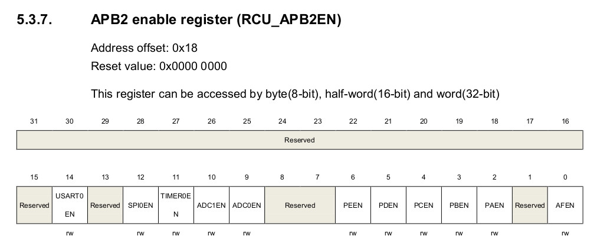
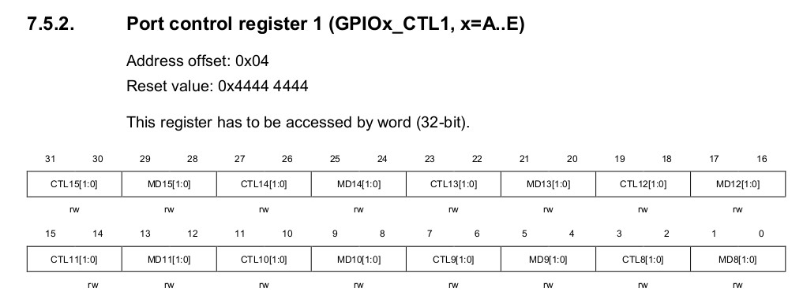
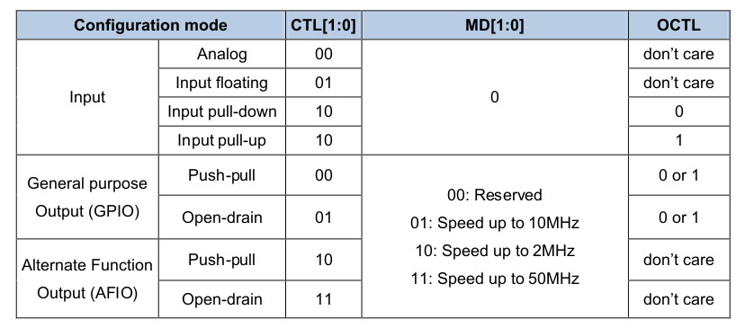
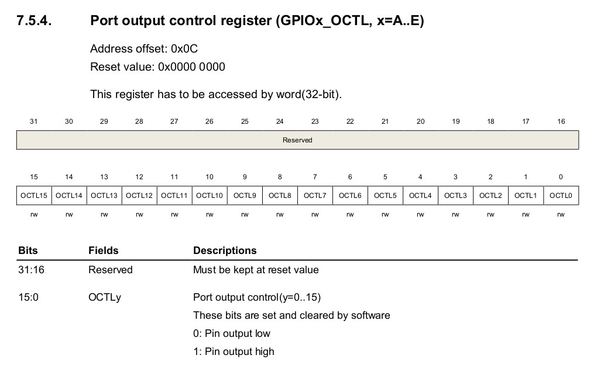
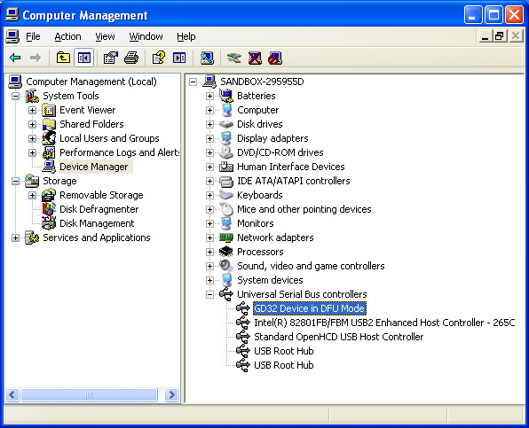
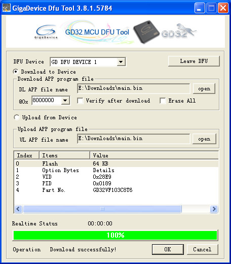
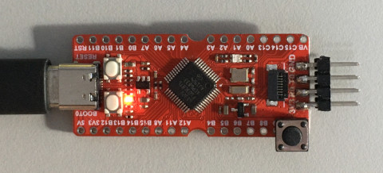
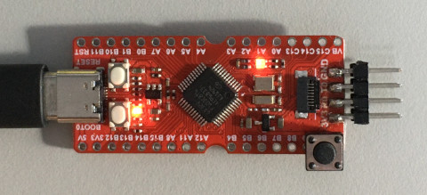

LED_R腳位(PC13)





.global _start
.equiv RCU_BASE, 0x40021000
.equiv RCU_CFG0, 0x04
.equiv RCU_APB2EN, 0x18
.equiv GPIOC_BASE, 0x40011000
.equiv GPIO_CTL0, 0x00
.equiv GPIO_CTL1, 0x04
.equiv GPIO_OCTL, 0x0c
.text
.org 0x0000
_vector:
j _start
.org 0x0200
_start:
li t0, 0x10
li a0, RCU_BASE
sw t0, RCU_APB2EN(a0)
li t0, 0x300000
li a0, GPIOC_BASE
sw t0, GPIO_CTL1(a0)
li t1, 0x2000
li t2, 0x0000
li a0, GPIOC_BASE
0:
xor t2, t2, t1
sw t2, GPIO_OCTL(a0)
lui t0, 100
1:
nop
addi t0, t0, -1
bgtz t0, 1b
j 0b
.end
main.ld
MEMORY {
FLASH : ORIGIN = 0x08000000, LENGTH = 0x20000
}
SECTIONS {
.text : { *(.text*) } > FLASH
.rodata : { *(.rodata*) } > FLASH
.bss : { *(.bss*) } > FLASH
}
Makefile
all: riscv-nuclei-elf-as -o main.o main.s riscv-nuclei-elf-ld -T main.ld -o main.elf main.o riscv-nuclei-elf-objcopy -O binary main.elf main.bin clean: rm -rf main.bin main.o main.elf
編譯
$ make
riscv-nuclei-elf-as -o main.o main.s
riscv-nuclei-elf-ld -T main.ld -o main.elf main.o
riscv-nuclei-elf-objcopy -O binary main.elf main.bin
燒錄
1. 按住BOOT0
2. 連接USB到PC



